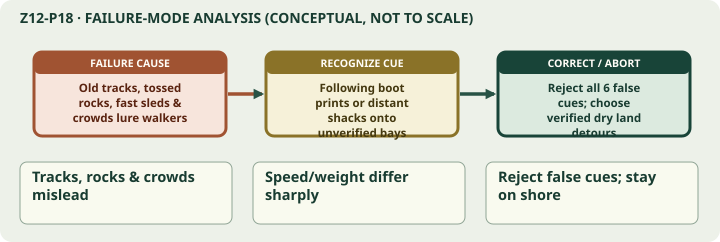

Z12-P18 · Extreme environments · Adapted historical material
Reject six false signs of safe ice including tracks, snowmobiles and clear cold air
Recognize deceptive social and visual cues that routinely lure people onto fatal thin ice.
When it applies · Winter shoreline decision-making around frozen lakes, parks and rivers.
Equipment · Independent safety judgment and verified land route.

Actions
- Reject three classic false visual signs: (1) "it has been freezing for days" (snow blankets and currents override air temp), (2) "the surface looks smooth and solid white" (snow hides slush and holes), and (3) "a thrown rock did not break it" (small stone impact ≠ human weight).[X01, E12]
- Reject three classic false social signs: (4) "there are footprints or dog tracks ahead" (lighter weight or earlier colder morning), (5) "a snowmobile crossed fast" (speed skims thin spots that break under slow boots), and (6) "other people are out there" (others may be in unseen danger or over a different safe pocket).[X01, E12]
- Base every shoreline decision strictly on verified land-route alternatives and independent safety limits rather than following crowds or tracks.[E12, X01, N10]
Failure recognition · Walking onto an unfamiliar frozen bay because old boot prints and a distant ice-fishing shack sit on the far side.[X01, E12]
Verify · Name why tracks, rocks, crowds and cold air fail to establish crossing safety before stepping near any winter shoreline.[X01, E12, ED]
Stop or change course · Never follow tracks, pets or strangers onto unverified ice; stay on solid shore.[X01, E12]
Evidence and editorial notes
- E12 · Minnesota DNR · Ice Safety (current web edition)
- Section: Ice Safety > basic precautions · Conditions: Minnesota ice edges and travel routes
Support: No ice is universally safe. Strength can differ over short distances; appearance or tracks alone cannot establish a safe crossing.
Limitations: Currents, springs, snow insulation, and freeze-thaw cycles weaken ice invisibly. · Conflicting evidence: None; mandates shore-bound detour for foundational walking parties.
Editorial note: Maintains strict separation from specialized B013 ice chapters. · Specialist reviewer: Ice safety and search and rescue
Primary source · checked 2026-11-24 - N10 · NWS · Turn Around Don't Drown (current web edition)
- Section: Turn Around Don't Drown > Flooded Crossings and Terrain Detours · Conditions: Navigating around flooded streams, washes and submerged roads
Support: Water barriers and flooded crossings conceal washed-out banks, swift undercurrents and deep holes; detour along verified dry high-ground routes or hold in a safe elevated spot.
Limitations: Applies equally to foot and vehicle navigation. · Conflicting evidence: Aligns with B014-P12 and T07.
Editorial note: Connects navigation rerouting to flood and water-barrier boundaries. · Specialist reviewer: Search and rescue and emergency management
Primary source · checked 2026-11-24 - X01 · Minnesota DNR · General Ice Thickness Guidelines (current web edition)
- Section: General Ice Thickness Guidelines > New Clear Ice Only · Conditions: Minnesota lakes and ponds during stable winter freezing
Support: Agency thickness guidelines apply ONLY to new, clear solid ice and are NEVER a guarantee of safety; white snow-ice is roughly half as strong, and currents, springs, inlets, outlets and snow cover create hidden thin zones.
Limitations: No ice is 100% safe; one drilled thickness check does not clear an entire crossing route. · Conflicting evidence: Directly reconciles B013 P01–P05, P11 and P17 with MN DNR warnings.
Editorial note: Enforces non-guarantee ice boundaries across Z12. · Specialist reviewer: Ice safety and winter search and rescue
Primary source · checked 2026-11-24
Source lineage · B013-P17 six false signs and MN DNR ice; adapted historical material · Classification · Adapted historical material.